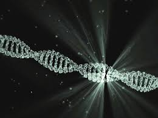

Moldando o Amanhã
Pesquisar
A Vida como você nunca viu antes: A ciência e a engenharia genética revolucionando o mundo, o futuro não espera. Ele é projetado! Moldado pela inovação e pela coragem de ir além do limite um dia existente.
Descubra as inovações que estão transformando o Mundo. Explore o universo da ciência e tecnologia!
Cientistas criam organismo com DNA mínimo - um novo passo para a engenharia genética!
Gráfico Dinâmico
A resposta que você procura pode estar neste episódio
"A Ciência Revela: A Resposta Estava Aqui o Tempo Todo!"
“Biotecnologia Vermelha: quando a próxima revolução médica já está nas páginas — clique e descubra como a ciência está hackeando a cura!”
"Genômica: O Mapa Secreto do DNA que está reinventando diagnósticos"
"Biotecnologia do Futuro: A Revolução que Sempre Esteve Escondida Dentro de Nós!"
“Biotecnologia: o futuro já chegou — descubra como ela transforma alimentos, reduz emissões e revoluciona a produção hoje!”
Explore o poder do DNA Projetado e descubra como o Futuro já começou!
"Tecnologia Avança: Super Humanos - O Futuro da Medicina em ação!"
Explore o poder do DNA Projetado e descubra como o Futuro já começou!
"Veja como o DNA Projetado pode transformar o estudo das células humanas."
"Entenda como a Biotecnologia ajuda a desenvolver novos tratamentos para doenças."
"Descubra como a Engenharia Genética abre caminhos para a Medicina do Futuro."
"Seegene - soluções Inovadoras de diagnóstico molecular."
Quando editar o código da vida exige mais consciência do que técnica, um convite à reflexão profunda sobre os limites éticos da manipulação do genoma humano.
Cada imagem pulsa como um DNA de ideias. Criando, transformando e inspirando o futuro em silêncio.